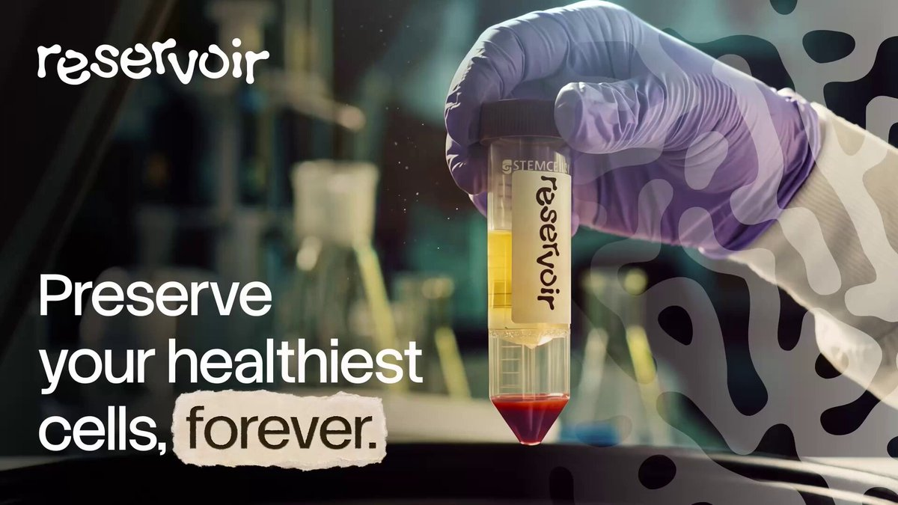
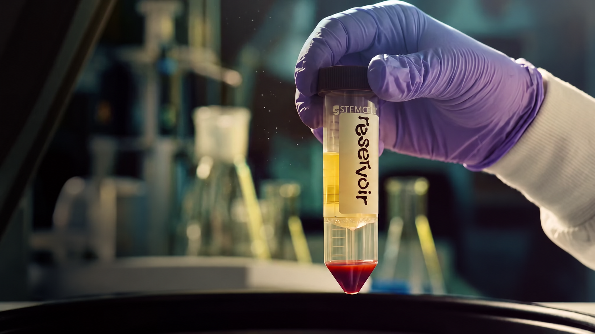

02 · Dr. Nabiha Saklayen (@nabihasaklayen)Watch ↗
In partnership with Vinod Khosla (@vkhosla), I’m proud to introduce Reservoir.

Original thumbnail
Image-only reconstruction- Words on image
- Preserve your healthiest cells, forever.
- Brand / secondary
- reservoir
- Image
- Purple-gloved hand holding a specimen vial in a laboratory
- Layout
- Headline on dark left half; vial and hand dominate right half
Text file ↗
Introducing GPT-6 in ChatGPT with Intelligent UI
Original thumbnailImage-only reconstruction
- Words on image
- Sometimes words aren’t enough; GPT-6 with Intelligent UI
- Brand / secondary
- —
- Image
- Woman holding a folded newspaper on a city street
- Layout
- Words scattered around subject; largest title overlaps newspaper at bottom
Text file ↗
Get Started with Kimi Work - Tutorial #3
Original thumbnailImage-only reconstruction
- Words on image
- Get Started with Kimi Work
- Brand / secondary
- Kimi logo
- Image
- Presenter at a desk in a bright room
- Layout
- Headline upper left; person right; small logo lower left
Text file ↗
Build Slides with Kimi Work (Kimi K3)
Original thumbnailImage-only reconstruction
- Words on image
- Build Slides with Kimi Work
- Brand / secondary
- Kimi logo
- Image
- Presenter behind laptop in a blue-lit room
- Layout
- Headline upper left; person center-right; small logo lower left
Text file ↗
RISE AND FALL // Hush Agent Trailer - VALORANT
Original thumbnailImage-only reconstruction
- Words on image
- HUSH
- Brand / secondary
- VALORANT; AGENT REVEAL TRAILER
- Image
- Purple-and-cyan game character close-up with raised hand
- Layout
- Face fills left; hand and giant title fill right
Text file ↗